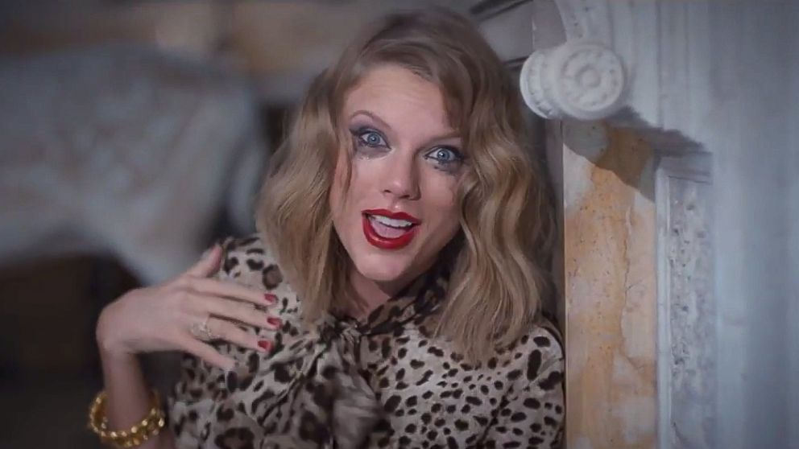
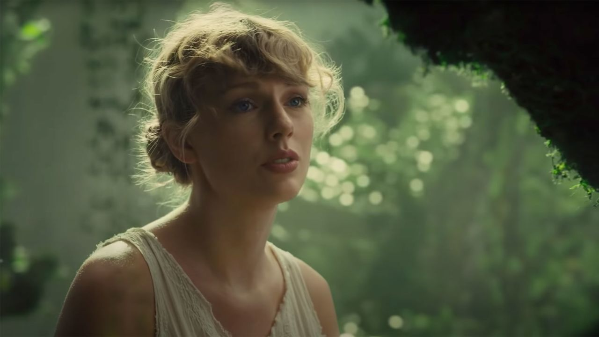
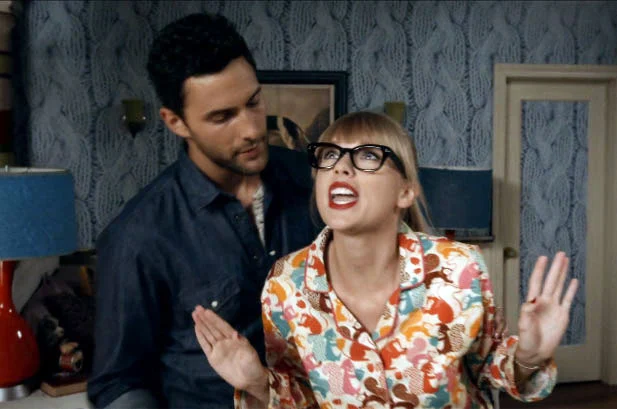

Taylor Alison Swift es una cantautora, productora, directora, actriz y empresaria estadounidense.
Criada en Wyomissing, se mudó a Nashville a los 14 años para realizar una carrera de música countr
|  | Blank Space |
|---|---|
|  | Cardigan |  | WANEGBT |
Nacimiento: 13 de diciembre de 1989 (edad 33 años),
Reading, Pensilvania, Estados Unidos